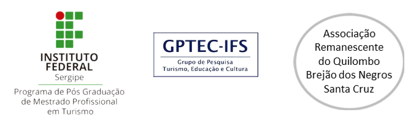

HISTÓRICO
Em Sergipe, existem algumas iniciativas de turismo de base comunitária, entretanto a maior parte delas não se concretiza, ou não se consolida. Algumas das comunidades que possuem ou já possuíram alguma aproximação com ações de sensibilização ou capacitação para o TBC são a Ilha Mem de Sá, situada no município de Itaporanga D’Ajuda, o povoado Ponta dos Mangues, localizado em Pacatuba, o território quilombola de Brejão dos Negros, em Brejo Grande, o Quilombo Mocambo, em Porto da Folha e os povoados Pontal e Terra Caída, em Indiaroba.
Desenvolver o TBC implica na realização de ações que envolvem o engajamento dos residentes no planejamento, na prestação e gestão dos serviços, capacitações e etc. Nesse sentido, as Comunidades deparam-se com o enfrentamento de uma série de desafios que, por vezes, dificultam a consolidação das iniciativas. Nesses processos, pessoas ou grupos são estimulados, mas alguns carecem de recursos financeiros para empreender, de conhecimento sobre gestão de negócios, bem como capacidade insuficiente de articular com a cadeia produtiva do turismo.
As inciativas ativas, que estão envolvidas atualmente com o TBC, são poucas e existem em condição de isolamento, ou seja, não dialogam e não conhece outras iniciativas similares, as potencialidades e desafios enfrentados. Recentemente, identificou-se uma sinalização de interesse por parte de comunidades em empreenderem atividades turísticas. Esse fato foi verificado a partir do envolvimento e falas de representantes dessas comunidades em eventos que abordavam o tema, promovidos pelo Instituto Federal de Sergipe (IFS) e parceiros, como o Seminário Sergipano de Turismo Comunitário (SESTUC, 2018), que inclusive culminou na Carta de Sergipe para o Turismo Comunitário, que contou com a participação de muitos desses representantes mencionados na sua elaboração.
O fomento de eventos como esse representa uma oportunidade de discutir o tema e aproximar comunidades entre si e de outros atores relacionados ao TBC, uma vez que se viabilizou a vinda de representantes para participarem. Embora esse fato represente um esforço visível no estabelecimento de diálogos, ainda assim foi uma ação de efeito pontual.
Ao longo das experiências pelo IFS, tanto no âmbito do ecoturismo como de TBC, vinculados ao ensino, pesquisa e extensão foi possível reconhecer a importância da continuidade das ações em uma comunidade, na medida em que o processo de sensibilização, envolvimento, capacitação prévia e conquista de autonomia para o desenvolvimento das ações turísticas ultrapassa os limites temporais de um projeto acadêmico. Mesmo assim, a continuidade das ações acadêmicas não garante que seja possível consolidar o TBC numa localidade ou no Estado de Sergipe, pois se entende ser algo mais complexo e estar além desse escopo. No entanto, entende-se que a provocação e incorporação do TBC na esfera pública, aliado aos projetos acadêmicos, ganha em magnitude e eficácia, permitindo direcionar programas e recursos para as temáticas.
Nessa perspectiva, propôs-se a construção de uma de rede de informação sobre turismo de base comunitária para Sergipe - a REDE INFO-TUCO, com a finalidade de gerar um movimento em diversas dimensões, incluindo o fluxo de informações a todos os participantes da rede. Diante disso, o objetivo desse projeto é retratar o processo de construção da REDE INFO-TUCO.
Fonte: CONSTRUÇÃO DA REDE PARA TROCA DE INFORMAÇÕES SOBRE TURISMO DE BASE COMUNITÁRIA: PRIMEIROS PASSOS. - Erika Marianne Brito Cavalcante(1) ; Claudio Roberto Braghini (2); Maria Auxiliadora de Carvalho Aquino (3); Thatiana Carvalho Santos(4) – Artigo para Propex - PIBIti
No Instituto Federal de Sergipe, do ponto de vista acadêmico no Curso Superior de Tecnologia em Gestão de Turismo, o TBC tem sido contemplado com ações de ensino, pesquisa e extensão, evidenciando a preocupação da equipe de professores em atualizá-lo, na medida em que incluiu em sua grade curricular as disciplinas Ecoturismo e Gestão de Turismo de Base Comunitária, bem como desenvolve nessa área diversas ações de pesquisa e extensão com estudantes e pesquisadores. A produção acadêmica em nível de graduação no IFS, assim como publicações de professores da instituição sinalizam o interesse na temática, destacando iniciativas de TBC em Sergipe (VIEIRA, 2010; FAXINA et al, 2014; FREITAS, 2016; MADUREIRA et al, 2014a; 2014b; MARQUES et al, 2014; SANTOS et al, 2014; SANTOS, 2016).
Desde 2016, o Programa de Pós-Graduação de Mestrado em Turismo Profissional (PPMTUR) adotou a linha de pesquisa, Gestão de Turismo de Base Comunitária e busca gerar conhecimento sobre as iniciativas em Sergipe, produzindo conhecimento e estímulo ao desenvolvimento de ações, além de fomentar articulação entre parceiros. Nesse sentido, sistematizar conhecimento, articular conexões, auxiliar na troca de saberes e fazeres, valorizar a cultura local e a conservação ambiental são exemplos dessas possibilidades, gerando uma dinâmica dos grupos de pesquisa e articulação com os cursos de turismo em outros níveis (graduação e técnicos) no próprio IFS.
Sobre
FINALIDADES
Este grupo foi criado com o objetivo de gerar e circular informações sobre turismo de base comunitária (TBC) e turismo no espaço rural, principalmente em Sergipe.
PRA QUE TUDO ISSO?
As coisas que acontecem relacionadas ao TBC, por vezes são isoladas e não sabemos o que acontece em outras partes do estado. Quando sabemos que há outras iniciativas, podemos nos fortalecer ou estimular outras ações e interesses.
Sem informação ficamos isolados, nos desmotivamos. Quando vemos que alguém está
fazendo algo que gostaríamos que acontecesse na minha comunidade, ganhamos
força.
Portanto, sejamos bem-vindos.
QUEM ESTÁ PROMOVENDO A REDE?
A Rede Info-Tuco é uma iniciativa do GPTEC-IFS, o Grupo de Pesquisa Turismo, Educação e Cultura do Instituto Federal de Sergipe. Nasce do projeto de PIBITI, edital 09/2018.
O QUE É TBC?
Turismo de Base Comunitária (TBC), Economia Solidária e Agroecologia com foco no desenvolvimento territorial.
Objetivos
- Reconhecer o turismo de base comunitária (TBC) como atividade que pode agregar valor à produção rural, estimulando a capacitação para melhor receber e apresentar seus produtos.
- Fortalecer as iniciativas de turismo comunitário existentes e a possibilidade de agregar valor à produção rural e a cultura local.
- Proporcionar encontros e diálogos entre comunidades de Sergipe a fim de fomentar relações e pactuações.
- Aproximar a produção acadêmica às comunidades, quanto a temática de turismo de base comunitária.
- Debater e fomentar a construção de políticas públicas no âmbito do turismo de base comunitária de Sergipe, com a perspectiva de desenvolvimento das localidades.
Interfaces
Quem Somos
